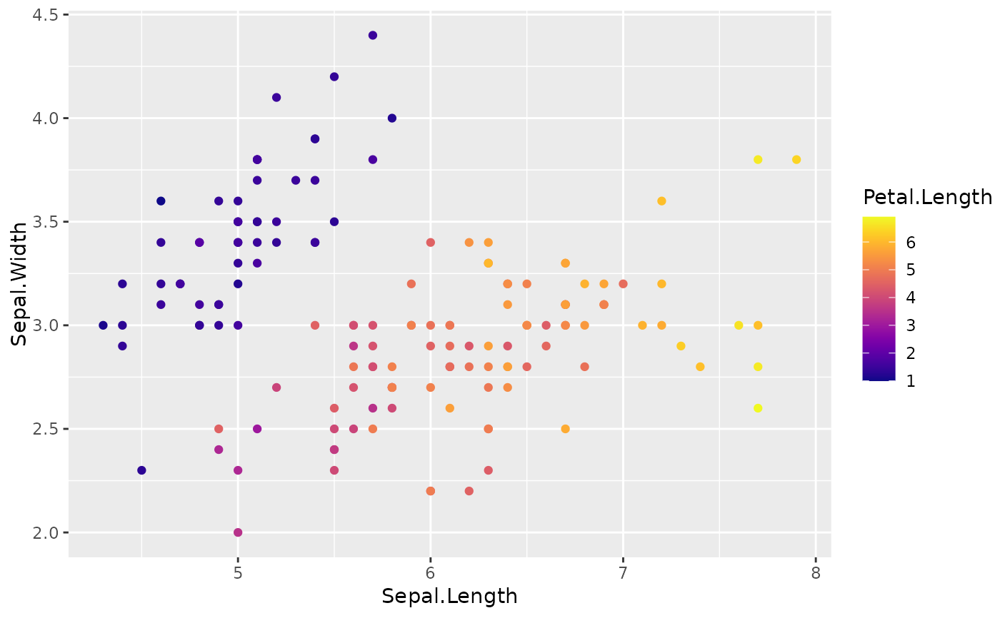
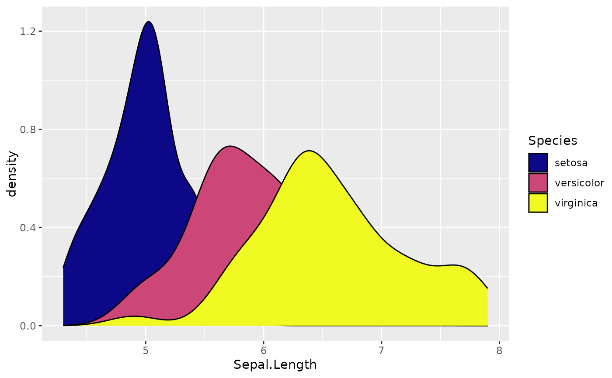

Custom color scales
scale_color_custom.RdCustom scale functions (fill and colour/color) for ggplot2.
For discrete == FALSE, the custom scale uses the viridis color
palette. For discrete == TRUE, custom color palettes are used.
Usage
scale_colour_custom(
discrete = FALSE,
palette = "viridis",
viridis_option = "plasma",
...
)
scale_color_custom(
discrete = FALSE,
palette = "viridis",
viridis_option = "plasma",
...
)
scale_fill_custom(
discrete = FALSE,
palette = "viridis",
viridis_option = "plasma",
...
)Arguments
- discrete
Logical. If
TRUE, use a discrete color scale. IfFALSE, use a continuous color scale.- palette
Character. The name of the color palette to use. Options are "viridis", "high_contrast", and "redblue".
- viridis_option
Character. The viridis color palette option to use. Only used if
palette == "viridis". Default is "plasma". Seeviridisfor more information.- ...
Additional arguments to pass to
ggplot2::discrete_scale()ifdiscrete == TRUEand toviridis::scale_color_viridis()orviridis::scale_fill_viridis()ifdiscrete == FALSE.
Examples
library(ggplot2)
ggplot(iris) +
aes(x = Sepal.Length, y = Sepal.Width, color = Petal.Length) +
geom_point() +
scale_color_custom(discrete = FALSE)

ggplot(iris) +
aes(x = Sepal.Length, fill = Species) +
geom_density() +
scale_fill_custom(discrete = TRUE)
